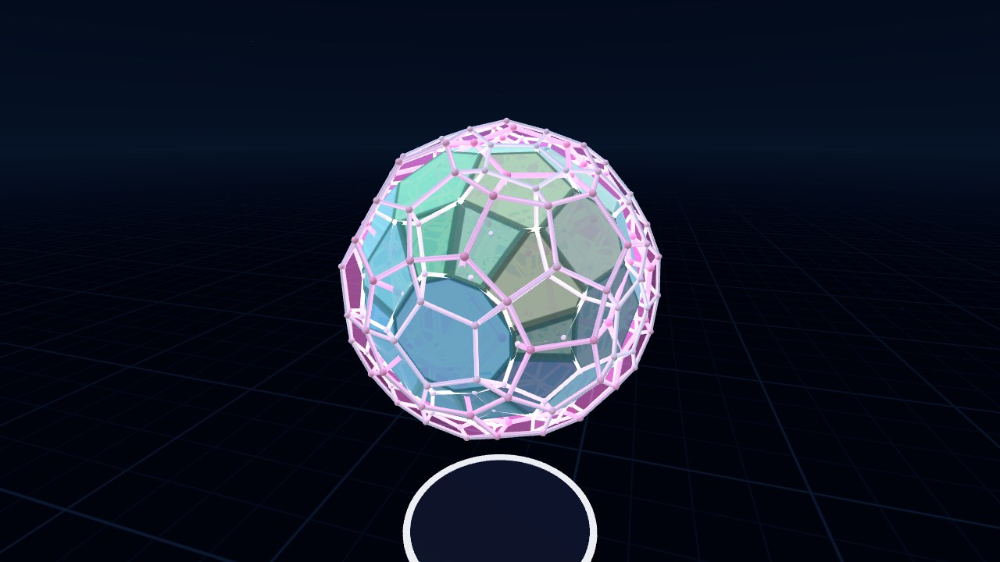

The 120-Cell
The 120-cell is the biggest of the six regular 4D polytopes. It's made of 120 dodecahedra, three around each edge. 4D VR has two ways to look at it: as a projection you can turn through 4D, and from the inside as a tiling of curved space.

Works in a desktop browser, on a phone, or in the Quest Browser. Press Enter VR on the start screen to use a headset.
What It Is
The 120-cell has 600 vertices, 1200 edges, 720 pentagonal faces, and 120 dodecahedral cells. Its Schläfli symbol is {5,3,3}, its dual is the 600-cell, and its long name is hecatonicosachoron.
The 3D version of the idea is the dodecahedron, where 12 pentagons close up with three around each vertex. The 120-cell does the same thing one dimension up. Three dodecahedra don't quite fit around an edge in flat 3D space. Their dihedral angle is about 116.6°, so three of them leave a gap of about 10°. In 4D the cells can bend out of 3D to close the gap, the same way a flat net of pentagons folds up into a dodecahedron.
Projection & Slicing
In Polytope Lab the 120-cell sits on a pedestal as a perspective projection, which is the 4D version of a shadow. Cells near the 4D viewpoint look big and the ones on the far side get squashed into the middle. You can rotate it in any of the six 4D rotation planes. When a rotation involves w, cells turn inside out as they pass through the middle of the projection. That's the part that's hard to get from still pictures.
The cross-section with a 3D hyperplane is drawn inside the projection at the same scale. Move the hyperplane along w and you can see which cells it cuts through. There's also a stereographic projection and a view that only shows the slice.
The other regular 4-polytopes (5-cell, tesseract, 16-cell, 24-cell, and 600-cell) are in the same scene.
Inside the 120-Cell
If you puff the 120-cell out onto a 3-sphere (the 3D surface of a 4D ball), its 120 dodecahedra fill it with no gaps. The cells are curved a little there, and the dihedral angle becomes exactly 120°.
Spherical Space puts you inside one of those cells. Every room is a dodecahedron and three meet at every edge. Walk straight through 10 of them and you're back where you started, which is about 10 m at the default size. Light goes all the way around too, so far away straight ahead is the back of your own head.

In VR, walk around or pinch empty space and pull to move. On a desktop, use WASD to move, drag to look, and Q/E to go down and up. The menu also has the 24-cell, tesseract, and 5-cell as tilings, and a slider for the radius of the 3-sphere.